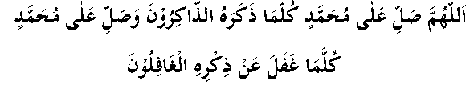

A person says, "I saw Imaam Shafi’ee (may Allah have mercy on him) in my dream after he had passed away. I asked him, 'How did Allah Ta’ala treat you?' He replied, 'Allah Ta’ala forgave me and ordered that I be taken to Jannah with great honour and dignity. This was all in reward for a certain form of durood I used to read.' I asked, 'What was it?' Imaam Shafi’ee (may Allah have mercy on him) said:

O Allah, send durood upon Muḥammad (sallallahu alayhi wasallam) whenever those busy in his remembrance remember him and whenever those who are negligent of his remembrance are in their neglect.